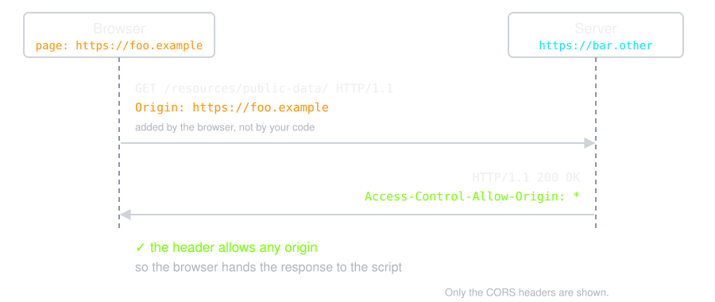

Example
An example of a cross-origin request, the front-end JavaScript code served
from
https://domain-a.com uses fetch to
make a request for
https://domain-b.com/data.json.
Another Example
For example, suppose web content at
https://foo.example wishes to invoke content on
domain https://bar.other. Code of this sort
might be used in JavaScript deployed on foo.example:
const url = "https://bar.other/resources/public-data/";
const response = await fetch(url);
const data = await response.json();
This operation performs a simple exchange between the client and the
server, using CORS headers to handle the privileges:

Here is what Chrome actually sent to the server in this case (User-Agent
and the sec-ch-ua client hints left out):
GET /resources/public-data/ HTTP/1.1
Host: bar.other
Connection: keep-alive
Accept: */*
Origin: https://foo.example
Sec-Fetch-Site: cross-site
Sec-Fetch-Mode: cors
Sec-Fetch-Dest: empty
Referer: https://foo.example/
Accept-Encoding: gzip, deflate, br, zstd
Accept-Language: en-US,en;q=0.9
The request header of note is Origin, which the browser adds
to show that the invocation is coming from
https://foo.example. Now let's see how the
server responds:
HTTP/1.1 200 OK
Access-Control-Allow-Origin: *
Content-Type: application/json
Date: Wed, 14 Oct 2026 04:28:57 GMT
Connection: keep-alive
Keep-Alive: timeout=5
Transfer-Encoding: chunked
{"users":42}
The server answers with
Access-Control-Allow-Origin: *,
which means that the resource can be accessed by any origin.
Proxy Server (Frontend)
When you are developing a Front-end application, you often cannot change
the responses of the server you are calling. Instead, let the development
server act as a proxy: the page sends
its request to the server it came from, so the browser sees a
same-origin request. The proxy forwards it
to the back-end server to server, where the same-origin policy does not
apply, and hands the answer back as its own response.
No CORS is involved at any step.
Example
With Create React App (now legacy, but you will meet it) the setting lives
in package.json:
{
"name": "application",
"version": "0.1.0",
"private": true,
"proxy": "http://localhost:8080"
}
With Vite the same setting lives in
vite.config.js:
export default defineConfig({
server: {
proxy: {
"/api": "http://localhost:8080",
},
},
});
Why does it work?
The browser only ever talks to the development server, so from its point
of view every request is same-origin and no
preflight is sent at all. The development server then forwards the request
to the back-end from
outside the browser, where the
same-origin policy does not apply, and returns the answer as its own
response.
Be careful
This is a development-time workaround
only. In production the development server is gone, so the back-end must
either send the right CORS headers or be served from the
same origin as the front-end.
![A fetch with method PUT and Content-Type application/json. The browser first sends OPTIONS /data.json with Origin, Access-Control-Request-Method: PUT and Access-Control-Request-Headers: content-type. The server answers 204 No Content with Access-Control-Allow-Origin, Access-Control-Allow-Methods: GET, PUT, Access-Control-Allow-Headers: Content-Type and Access-Control-Max-Age: 600. Then the browser sends the real PUT with Origin and Content-Type: application/json, and the server answers 200 OK with Access-Control-Allow-Origin.](./img/preflight.svg)
![Your script calls fetch for private.json. The browser sends GET /private.json with Origin: http://localhost:8081 to the server, and the server's handler runs. The server answers 200 OK with the body {"secret":42} and no Access-Control-Allow-Origin. The browser blocks it, and the script gets TypeError: Failed to fetch without seeing the status or the body. The console shows: Access to fetch at 'http://localhost:8082/private.json' from origin 'http://localhost:8081' has been blocked by CORS policy: No 'Access-Control-Allow-Origin' header is present on the requested resource.](./img/blocked.svg)